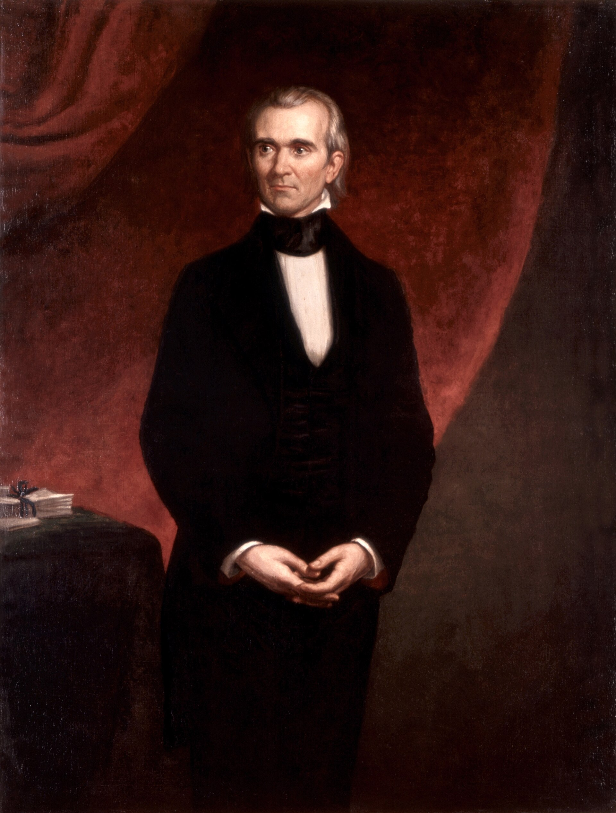

Directions: Fill in the chart as we work the expansion record by record. Keep this page in your notebook. You will use it again on the review day before the unit test.

| The record | What happened | The story told about it | What it left unsettled |
|---|---|---|---|
| Texas annexation, 1845 | |||
| Oregon settlement, 1846 | |||
| The war with Mexico, 1846 to 1848 | |||
| The treaty, February 1848 | |||
| The Wilmot Proviso, 1846 |
The expansion in one sentence. Finish this sentence in your own words, using at least two rows of the chart as evidence. Manifest Destiny named a destiny, but the records show a set of choices, because...
| The record | What happened | The story told about it | What it left unsettled |
|---|---|---|---|
| Texas annexation, 1845 | Texas revolted from Mexico in 1836, stood as a recognized republic for nine years, and entered the Union in 1845 by joint resolution of Congress, a simple majority doing what a treaty could not. | O'Sullivan's editorial told Texas as already ours, its convention ratifying an invitation, and foreign objection as hostile interference with a manifest destiny. | Mexico never recognized the loss, and the boundary between the Nueces and the Rio Grande stayed disputed, the ground on which the war opened a year later. |
| Oregon settlement, 1846 | The Oregon Country, jointly occupied with Britain since 1818, was divided at the 49th parallel by treaty in 1846, although the campaign cry had demanded the whole country to 54 degrees 40 minutes. | Expansion against Britain was told as a claim to be negotiated, and half a claim accepted by treaty counted as success. | The contrast with Mexico stood unexplained in the telling: one claim halved by negotiation while the other was taken whole by war. |
| The war with Mexico, 1846 to 1848 | After the Thornton affair in disputed ground, Congress recognized a war in May 1846. Taylor fought in the north, Scott took Mexico City, and Kearny and Fremont moved in New Mexico and California. | Polk told the war as defense, American blood shed on American soil by a Mexico that had refused an envoy and threatened reconquest, while Lincoln's spot resolutions asked where that soil was. | Whether the bloodshed spot was American soil at all, the question the House asked in December 1847 and the administration never answered to its satisfaction. |
| The treaty, February 1848 | The Treaty of Guadalupe Hidalgo confirmed the Rio Grande, ceded California, New Mexico, and the country between for fifteen million dollars, and in Article VIII gave Mexican citizens in the ceded lands a choice of citizenship within one year, with property respected. | The settlement was told as firm and universal peace between the two republics, a legal closing between equals on paper. | The standing of the new Mexican American population the treaty created, whose promised property and rights the following years would test. |
| The Wilmot Proviso, 1846 | David Wilmot's amendment would have barred slavery and involuntary servitude in any territory taken from Mexico. It passed the House repeatedly on sectional votes and died in the Senate every time. | Its supporters told expansion as a question to be answered before the land was taken: free soil as a condition of acquisition, in the language of the Northwest Ordinance. | Slavery in the Mexican cession itself, the question the treaty signed in February 1848 with the proviso still unpassed. |
The expansion in one sentence. Strong answers join the story to the choices. Manifest Destiny named a destiny, but the records show a set of choices, because Congress chose a joint resolution when a treaty failed in 1845, Polk chose negotiation at the 49th parallel with Britain and war with Mexico in 1846, troops were ordered into disputed ground by a president's decision, and the House chose repeatedly to bar slavery from the winnings while the Senate chose to block the bar.